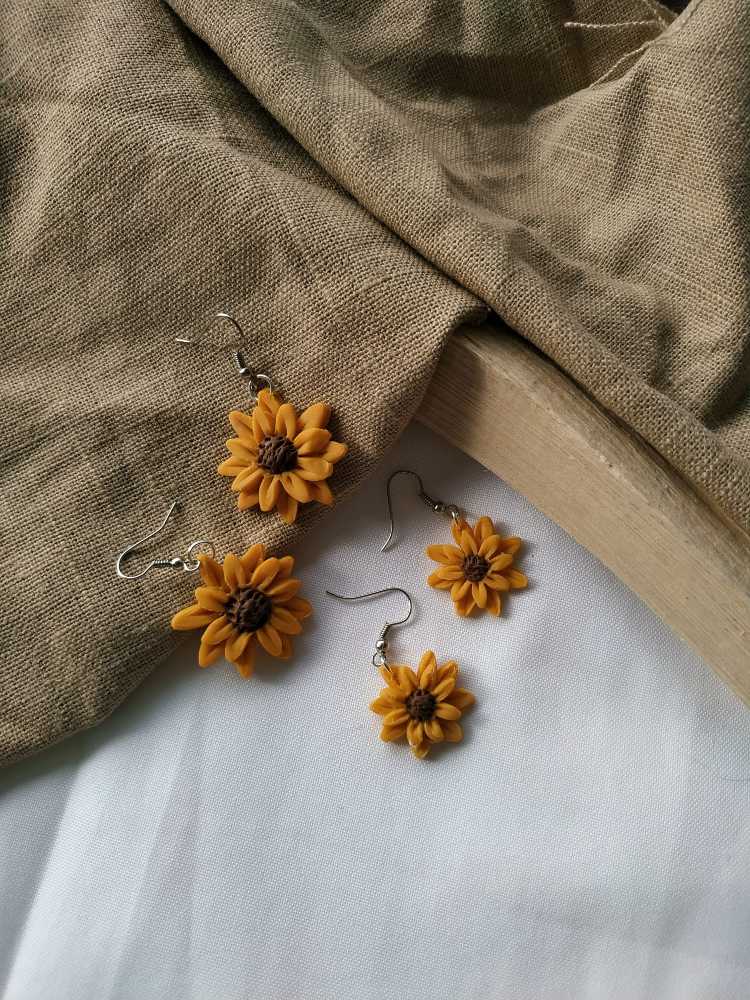
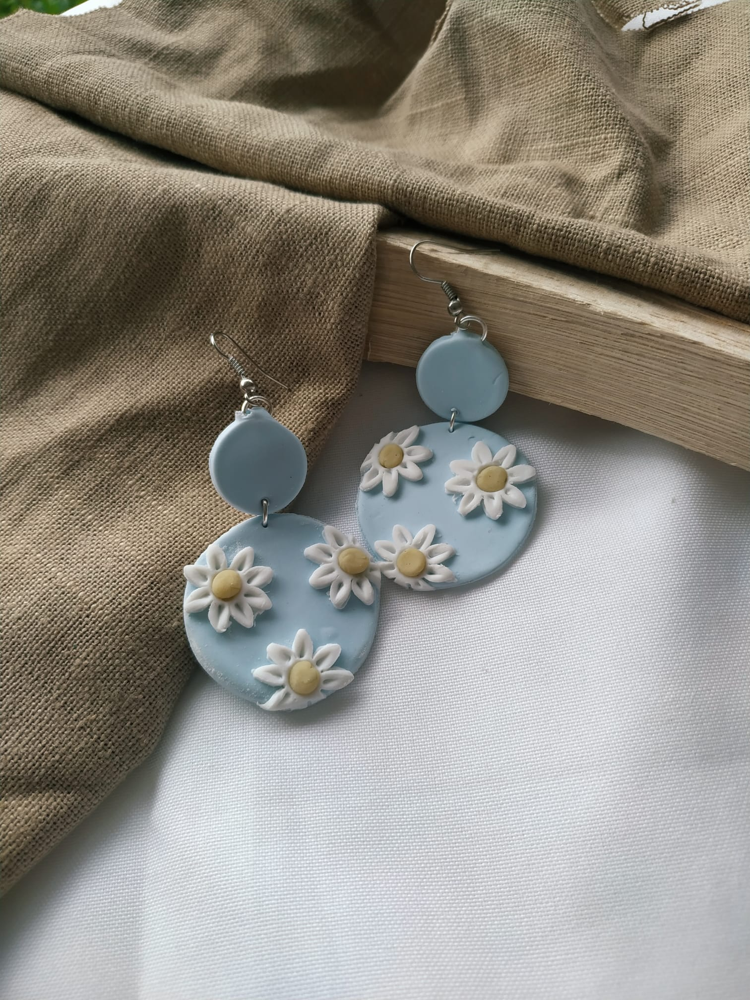
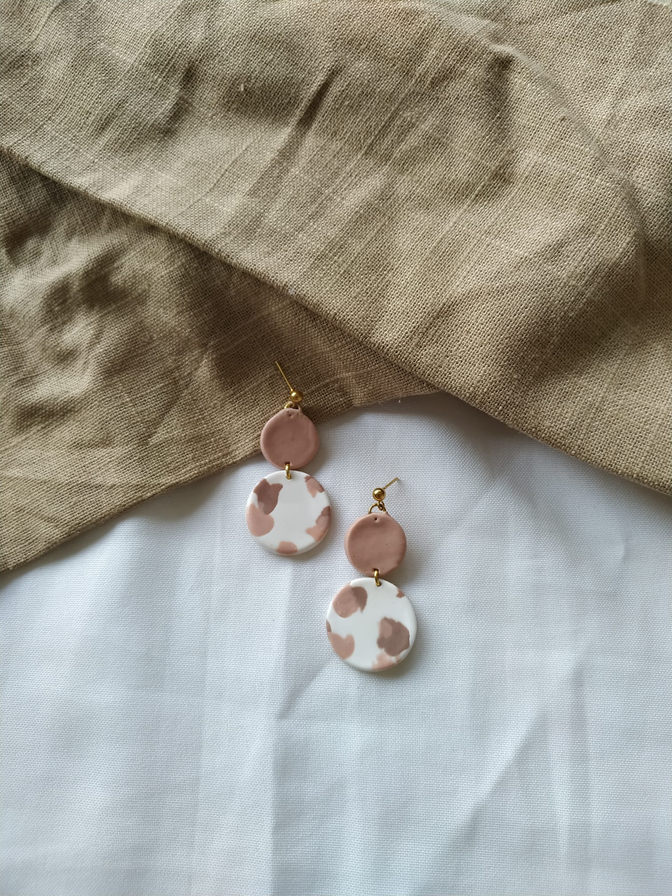
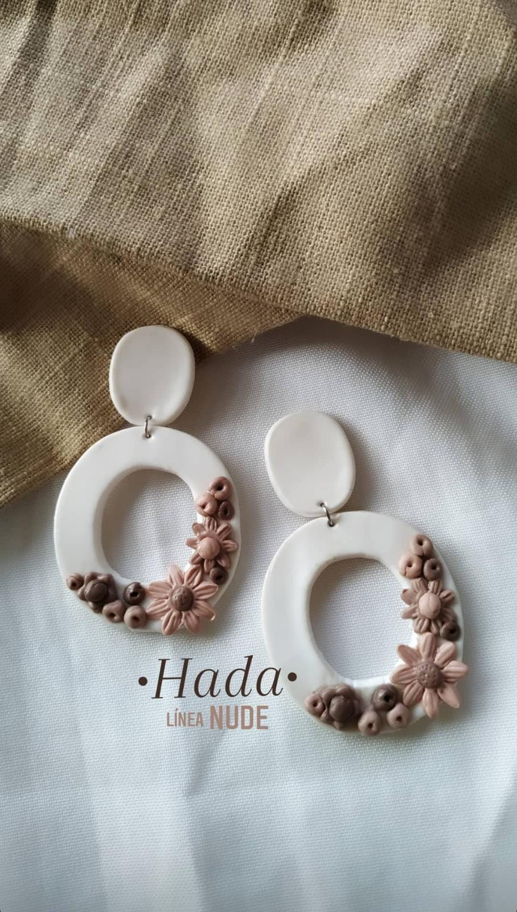
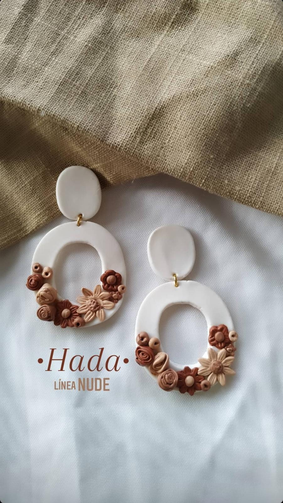
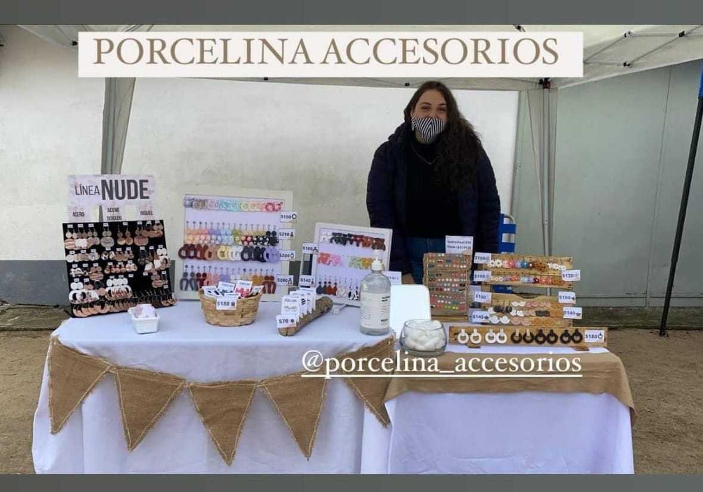

Porcelina accesorios es mi emprendimiento personal, se trata de la creacóin de accesorios en porcelana fría. Comenzó en el 2021 por recomendacón de mi psicóloga para entretener un poco la mente y terminó siendo mucho más, participé en muchas ferias realizadas en la ciudad donde vivo, obtuve mucha experiencia en atención al cliente, en marketing digital y en la creación de packaging.
Algunas fotos de mis trabajos:
     